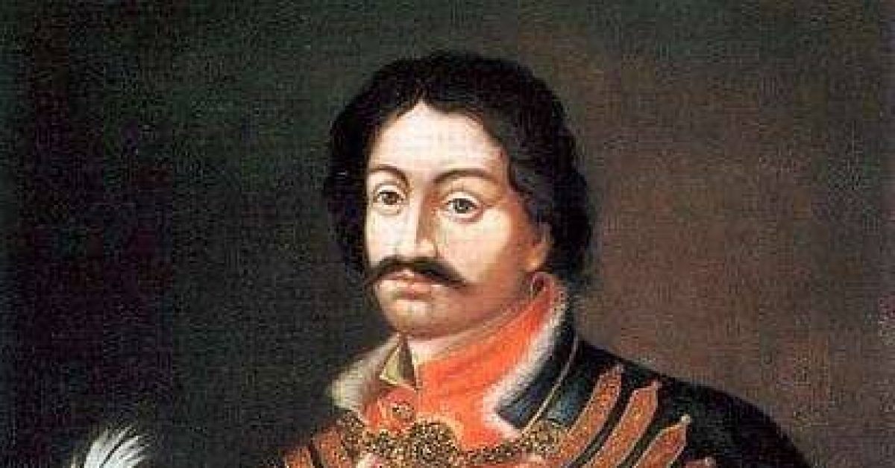
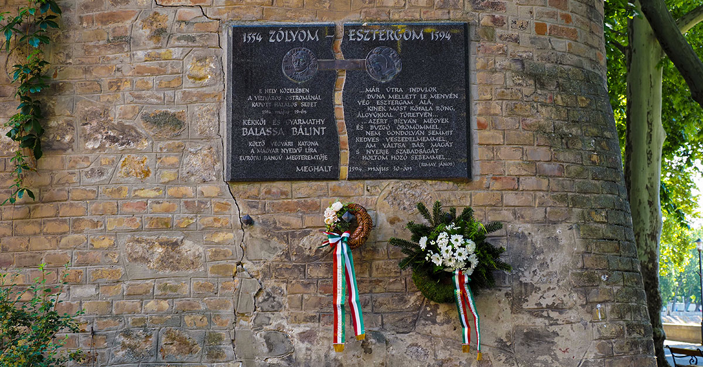
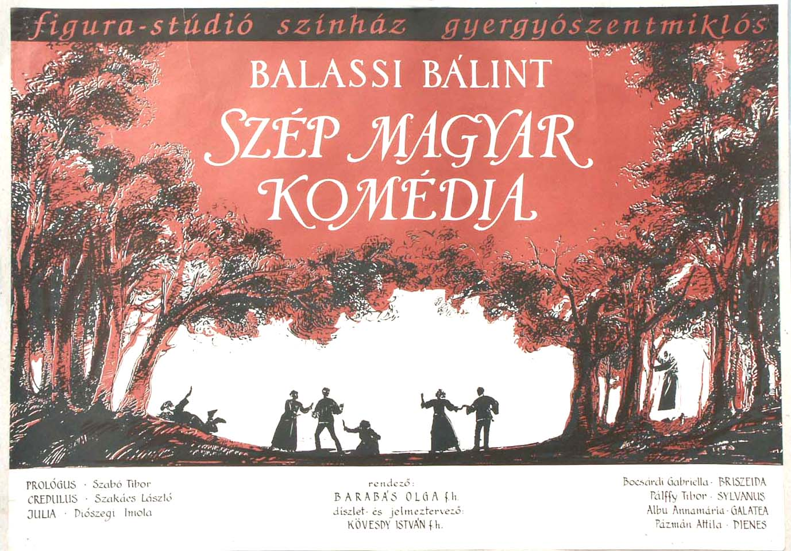

Balassi Bálint Élete
Balassi Bálint Szerelmes versei
Balassi Bálint Istenes Versek
Balassi Bálint Vitézi versei
Balassi Strófa
Balassi Bálint élete
(1554—1594)
A költőt
Balassa Bálintnak is hívják, de az általánosabban elfogadott név a
Balassi. (Ha
a Kiben bűne bocsánatáért könyörgett akkor, hogy
Házasodni szándékozott című versét tekintjük hitelesnek, akkor az
igazi neve: „Balassj Balinth”.) Családja hírhedten gonosz volt, nagybátyja sok árulásban vett rész és így rengeteg várat és birtokot harácsolt össze. Balassi is kivette részét ebből a féktelenségből, erőszakoskodott, szerelmi kalandokba keveredett, nagy táncosnak tartották, sokat mulatott. Emellett egy
rendkívül művelt ember, kilenc különböző nyelven írt, erősen vallásos volt és műveltsége az égig ért. Manapság kevés emberrel találkozhatunk, aki ennyire sokoldalú. Mivel
vallásos volt, erősen bánta bűneit, de semmit nem tett annak érdekében, hogy abbahagyja a rosszalkodást és jó útra térjen.
A
Zólyomi születésű, főnemes családból származó Bálint úrfi felnőttkorára
Magyarország második reneszánsz költője lesz.
Ráadásul ő volt az első, aki magyarul is írt, Janus Pannonius még csak a latint használta versírásra. Balassi gyermekkorában
Bornemissza Péter prédikátortól tanult, majd
11 évesen Nürnberg városába került, ahol iskoláit sikeresen bevégezte
14 éves korára.
Már a
15. életévében> el kellett hagynia Magyarországot, mivel apját perbe fogták felségárulás vádjával és emiatt a család Lengyelországba kellett, hogy meneküljön.
Innen kalandos körülmények között, háborús időkben
átkerült Erdélybe, ahol raboskodását megkönnyítette az a tény, hogy fogvatartója és az udvar barátként kezelte, mivel olaszos műveltségűek voltak mindannyian.
23 évesen hazatért Magyarországra és egy évre rá máris egy házas asszony, Ungnád Kristófné Losonczy Anna (Júlia versek) szerelmét kereste.
Még egy évvel később hadnagy lett,
4 évig szolgált Egerben. (Anna elutasítja udvarlását, ezért Balassi
katonaként próbál becsületet szerezni magának, de ez nem sikerül, mivel magatartása miatt elküldik a várból)
Mégis volt azért értelme négy évet katonáskodnia, ugyanis megismerkedik unokatestvérével,
Dobó Krisztinával, akit feleségül is vesz („érdekfeleségül”). Házassága mindössze néhány hétig tartott, maga kezdeményezte annak felbontását, miután
felségáruló és vérfertőző címekkel illették az irigy nagyurak. Ekkor tér katolikus hitre is.
35 évesen visszatér Lengyelországba, ahol megismerkedik Wesselényi Ferencné Szárkándy Annával. (Célia versek)
40 évesen, Magyarországon, a török elleni harcokban, hősi halált hal 1594-ben.
1 / 3

Balassi Bálint Portré
3 / 3

Balassi Bálint Emlékműve
3 / 3

Balassi Bálint Fordítása
❮
❯
Munkássága
Balassi a magyar reneszánsz irodalom legnagyobb költője. Ő volt az első, aki
magyarul írt. Poeta doctus, azaz a
költészet nagymestere volt. Figyelt a hallhatatlanságára is; műveit tematikai rendbe szedve egy
kódexbe gyűjtötte, hogy az utókor könnyebben kiadhassa majd a
Balassi Bálint összes verse(i) könyvet. A kódex megszerkesztése során különös figyelmet szentelt a
Petrarca hagyománynak, miszerint három fő egységre bontotta verseit; Házassága előtti
(Anna versek), házassága utáni
(Júlia versek) és Istenes versek.
A mű nem lett kész, Balassi korai halála miatt csak az
első két ciklust tudta befejezni, az Istenes versekből mindössze
19 darab készült el.
Az eredeti terv
33+33+33+1 vers megírása volt, ebből 33+33+19+1 lett kész,
(a +1 a bevezető vers)
Ettől a kompozíciótól függetlenül a költő még egy
másik rendszer szerint is csoportosította műveit, ezeket tematikai csoportoknak nevezzük. A három csoport a következő:
Szerelmes versek, Istenes versek és Vitézi versek.
Az egyes csoportokon belül a szerkesztésmód, a szókincshasználat, a hangnem és a képhasználat megegyezik.
Költeményei mellett Balassi
magyar nyelvre ültetett át egy olasz pásztordrámát,
Szép Magyar Komédia címmel. Célja ezzel a műfaj meghonosítása Magyarországon volt.
A Reneszánsz Bemutatása
A
reneszánsz kialakulása a polgárosodásnak köszönhető. A meggazdagodó városi emberek
életébe egy új szükséglet lépett be; a kultúrált szórakozás utáni vágy.
A reneszánsz kialakulása a
XIV. században kezdődik, a reformáció a humáncentrikus felfogás mind elősegítették fejlődését.
Az új korszak tudatosan szembehelyezkedett a
középkorral és a múltba tért vissza, felújítva azt.
A reneszánsz egy művészeti korszak, előtérbe kerülnek az
írók, költők és a színészek.
A humanizmus
emberközpontú szemléletmód. Az
esztétika, vagyis a szépség, tökéletesség, harmónia, eszményítés és arányos megformálás jellemzi. Emellett a
tudás, bölcsesség fontossága is előtérbe kerül, értékesek lesznek az okos, művelt emberek.
Az
utópia a görög utoposz szóból ered, jelentése nemlétező hely. Az
elérhetetlenül tökéletes, megvalósíthatatlan társadalmi környezetet jelöli.
Vissza a főoldalra>
Az oldalt készítette:Nyitrai LászlóBujdosó Bálint